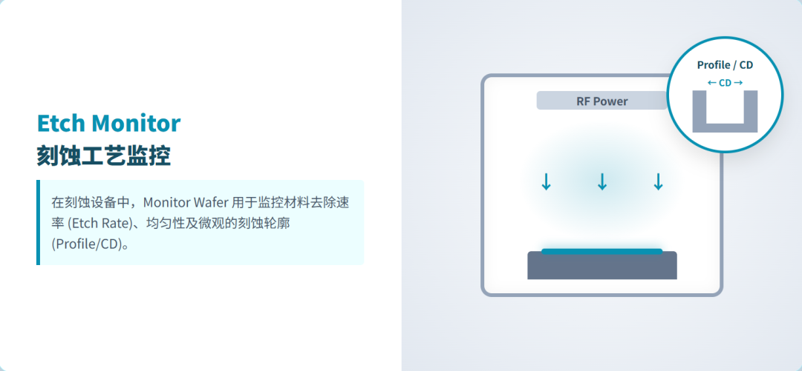
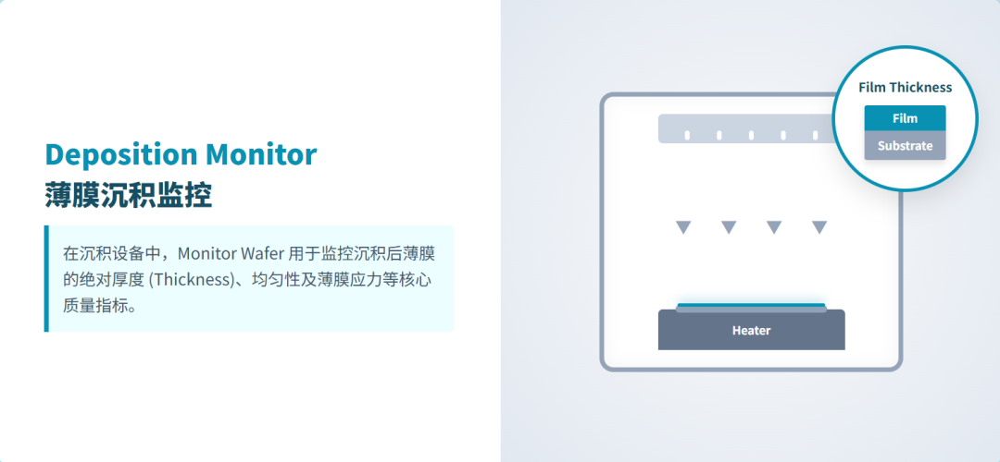
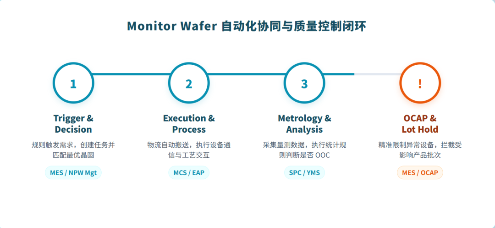

不生产芯片，却守护芯片良率：揭秘 FAB 里的 Monitor Wafer
查看微信原文 ↗在 12 寸晶圆厂（300mm FAB）中，有一种晶圆并不直接用于生产芯片，却承担着一项非常重要的任务：持续监控设备与工艺状态，帮助工程师及时发现潜在的工艺偏差。
有时候，设备没有触发明显的 Alarm，关键运行参数也没有出现明显异常，但晶圆上的薄膜厚度、刻蚀速率、颗粒数量或其他工艺结果指标，可能已经出现了偏移。这些变化如果没有被及时发现，就可能逐渐影响后续工艺，最终反映到产品质量和良率上。
那么，FAB 是如何发现这些不容易被设备自身报警捕捉到的工艺变化的？
答案之一，就是 Monitor Wafer（监控晶圆）。它就像生产线上的一双“眼睛”：通过特定的工艺处理和量测分析，把原本不容易直接感知的工艺状态，转化为可以记录、分析和追踪的数据。
而在高度自动化的 FAB 中，Monitor Wafer 的价值远不止完成一次工艺监控。它还需要与 MES、RTD、MCS、EAP、SPC、YMS 等系统协同，形成从任务触发、晶圆搬送、设备加工、量测分析到异常处置的自动化闭环。
Monitor Wafer，通常称为监控晶圆，是指用于监控特定工艺或设备状态的非产品晶圆。它的核心目的不是生产芯片，而是通过晶圆经过特定工艺后的检测结果，判断工艺过程是否处于预期状态。
为什么一定要用晶圆来监控？
因为设备运行参数正常，并不意味着最终工艺结果一定正常。例如：
- 刻蚀设备：RF Power、Pressure、Gas Flow 等参数在设定范围内，但实际 Etch Rate 可能已经发生变化。
- 沉积设备：温度、压力和气体流量看起来正常，但 Film Thickness 可能出现偏移。
- CMP 设备：运行参数没有明显异常，但晶圆表面的材料去除速率和均匀性可能已经变化。
设备参数反映的是设备运行过程，而 Monitor Wafer 的量测结果则能够从晶圆工艺结果侧，帮助判断工艺状态。两者结合，才能更全面地理解设备和工艺是否处于受控状态。在实际 FAB 中，Monitor Wafer 常见的监控目的包括：
①设备工艺状态监控
通过定期或按条件执行 Monitor Run，观察设备关键工艺指标是否发生变化。
②工艺能力监控
通过连续量测结果，分析工艺参数的稳定性、均匀性及变化趋势。
③PM 后设备状态验证
设备完成 PM（预防性维护）后，可能需要经过 Seasoning、Monitor Run 或 Qualification 等流程，确认设备是否满足重新投入生产的条件。具体流程取决于设备类型和 FAB 的工艺控制规范。
④产品工艺风险预防
通过监控晶圆提前发现潜在工艺偏差，避免异常持续影响产品批次。
这里需要特别区分三个容易混淆的概念：
* 三者可能在某些设备恢复或工艺验证流程中连续出现，但并不是同一件事。特别说明，Qualification 是对设备、工艺或特定生产条件进行资格确认的过程，具体验证方式取决于工艺控制规范，不一定仅依赖单片晶圆。
Monitor Wafer 并不是一种固定规格的晶圆。不同工艺对监控晶圆的结构、表面状态、工艺处理方式和量测方法都有不同要求。同样是一片 Monitor Wafer，在 Etch、Deposition、Litho、CMP 等工艺中，承担的监控任务可能完全不同。
1. Etch（刻蚀）：监控材料去除能力

刻蚀工艺的核心任务，是按照设计要求去除晶圆表面的特定材料。根据监控目标不同，通常会使用两类晶圆：Blanket Wafer（无图形晶圆），可通过工艺前后的膜厚变化监控材料去除速率；Patterned Monitor Wafer（图形化监控晶圆），则通过特定测试结构监控 CD、Profile 等图形相关指标。
- Etch Rate（刻蚀速率）：单位时间内材料被去除的厚度。
- Etch Rate Uniformity（均匀性）：晶圆不同位置刻蚀速率是否一致。
- Profile（刻蚀轮廓）：观察刻蚀后的侧壁角度、形貌等特征。
- CD（关键尺寸）：对特定测试结构量测，判断刻蚀后的关键尺寸变化。
* 例如，某台 Etch 设备原本稳定，但连续几次 Monitor Run 量测结果显示刻蚀速率逐渐下降。这可能意味设备腔体状态发生变化，需要进一步分析。
2. Deposition（薄膜沉积）：监控薄膜质量

薄膜沉积工艺的核心任务，是在晶圆表面形成符合要求的薄膜。常见监控指标包括：
- Film Thickness（薄膜厚度）：检查沉积薄膜是否达到目标厚度。
- Thickness Uniformity（均匀性）：检查晶圆不同区域薄膜厚度差异。
- Sheet Resistance（方块电阻）：对适用导电薄膜进行电学特性监控。
- Film Stress（薄膜应力）：监控薄膜内部应力变化。
- Refractive Index（折射率）：辅助判断薄膜材料特性及工艺状态。
3. Wet / Strip（湿法清洗与去胶）：监控表面状态
Wet 和 Strip 工艺涉及晶圆表面清洗、残留物及特定材料去除。常见监控指标包括：
- Particle（颗粒）：监控晶圆表面颗粒数量及分布。（注：Particle 结果反映晶圆表面的颗粒状况，异常来源需结合设备、药液和搬送环境进一步分析）
- Residue（残留物）：检查清洗或去胶后是否存在残留。
- Surface Condition（表面状态）：评估晶圆表面的洁净程度等。
- Material Removal（材料去除）：对适用工艺监控材料去除效果。
4. Litho（光刻）：监控光刻工艺质量
光刻工艺通过曝光和显影，将图形转移到光刻胶上。监控晶圆使用特定测试结构，常见指标包括：
- Resist Thickness（光刻胶厚度）：检查涂胶厚度及均匀性。
- CD（关键尺寸）：监控光刻图形的关键尺寸。
- Pattern Quality（图形质量）：检查图形形成情况及缺陷。
- Overlay（套刻）：通过专用套刻标记和方案，检查层间对准偏差。
5. Implant（离子注入）：监控注入工艺结果
离子注入改变材料电学特性。Monitor Wafer 通过后续量测间接评估注入结果，常见指标：
- Sheet Resistance（方块电阻）：反映特定条件下电学特性。（注：Sheet Resistance 是注入后电学特性的间接反映，并不等同于实际注入剂量）
- Implant Uniformity（注入均匀性）：通过适用的监控晶圆及量测方法，结合工艺条件和校准关系，评估注入结果在晶圆不同区域的均匀性。
- Junction Depth（结深）：在需要时通过专用分析方法评估结深。
6. CMP（化学机械抛光）：监控材料去除与表面质量
CMP 实现晶圆表面材料去除和平坦化。常见监控指标包括：
- Removal Rate（材料去除速率）：单位时间材料被去除的厚度。
- WIWNU（Within-Wafer Non-Uniformity，晶圆内非均匀性）：衡量晶圆不同位置材料去除结果的差异。
- Surface Roughness / Defect：评估抛光后表面粗糙度及缺陷。
核心认知：不同工艺需要不同类型的 Monitor Wafer，而这些晶圆也不是可以随意取用的普通物料。它们必须经过注册、适用性检查、任务匹配和使用履历管理，才能确保每一次 Monitor Run 都具有可信的参考价值。
Monitor Wafer 虽然不直接生产芯片，但它同样需要严格的生命周期管理。如果没有完善的管理机制，就可能出现晶圆身份不清、适用工艺错误、使用次数超限、量测结果无法追溯等问题。在 FAB 中，一片 Monitor Wafer 通常需要经历以下几个阶段：
1. Registration（注册）
首先，在系统中建立基础信息。如 Wafer ID（唯一标识）、Wafer Type、Spec（规格）、Film Stack、适用设备范围。此外，还要挂载 Usage Count（累计使用次数）、Last Process Time（最近工艺时间）、Reclaim Status（再生状态）以及适用任务或工艺对应的 Qualification Status（资格状态） 等动态属性。
2. Suitability Check（适用性检查）
根据监控晶圆的用途和工艺要求，检查其表面状态、薄膜特性及其他适用性指标，确保其满足指定 Monitor Task 的使用条件。需要注意，监控片自身的适用性检查，与设备或工艺的 Qualification Run 并不是同一个概念。
3. Dispatch（任务派工）
任务触发后，系统根据类型、设备要求、当前状态及使用寿命匹配合适的晶圆。不同 FAB 的派工逻辑可能由 MES、NPW 管理模块或 RTD 等分别承担。
4. Process（工艺执行）
被搬送至设备，按规定流程加工，系统记录相关设备、Recipe、执行时间及过程数据。
5. Measurement（量测分析）
加工后进入量测流程。结果需与对应的 Wafer ID、Monitor Task、工艺、设备履历等建立关联，确保数据可追溯。
6. Recovery / Reuse / Scrap（恢复/再生/报废）
量测完成后，根据晶圆状态和管理规范，可能直接进入 Reuse（再次使用），也可能进入 Clean/Reclaim（清洗再生）。经过清洗再生的晶圆，还需要重新进行 Suitability Check，满足使用条件后才能再次投入指定监控任务；对于无法恢复到规定状态的晶圆，则按照管理规范 Scrap（报废）。
总结：Monitor Wafer 的生命周期管理，实际上是对晶圆身份、使用资格、工艺履历和剩余寿命的全面管理。并非所有 Monitor Wafer 都可以重复使用。对于经过不可逆工艺处理、无法通过清洗或再生恢复到规定状态的晶圆，需要按照管理规范报废。
如果每一次 Monitor Run 都依赖工程师手工建单，不仅效率极低，还极易出现漏执行、执行延误或各设备标准不一的问题。在高度自动化的 FAB 中，Monitor 任务通常根据预设规则自动触发。为了理清这套逻辑，我们可以将它拆解为 Trigger（触发）、Decision（决策）与 Execution（执行） 三个分层：
一、Trigger：满足了什么触发条件？
1. Time Interval（时间间隔触发）：按预设周期执行（如设备每运行 N 小时）。
2. Wafer Count（晶圆数量触发）：设备按照预设统计口径，累计处理一定数量的 Product Wafer 后自动触发。
3. PM Completion（维护完成触发）：设备完成 PM 后产生触发。注意，PM 完成不意味着一定直接执行 Monitor Run，部分设备可能需要先执行 Seasoning，再进行 Monitor 或 Qualification。
4. Process/Product Condition（特定条件触发）：特殊工艺或高风险产品生产完成后触发验证。
5. Abnormal Event（异常事件触发）：当设备或工艺出现特定异常事件时，系统根据异常类型、风险等级和控制计划，判断是否需要触发额外的 Monitor Run。
二、Decision：是否需要执行？执行哪一种？
系统结合触发条件、设备状态、Monitor 类型及当前任务状态，判断是否真正创建任务。这里有一个非常重要的业务场景：如果多个触发条件（如时间触发和 Wafer Count 触发）在相近时间内同时满足，系统还需要判断是否合并任务，避免同一台设备重复创建无效的 Monitor Run。
三、Execution：由谁负责执行？
明确任务创建、晶圆匹配、设备选择、派工及搬送等环节分别由哪些系统（如 MES、RTD、NPW 管理模块、MCS）承担。
Monitor Wafer 自动化管理，真正复杂的不是生成一张任务单，而在于多个核心系统之间如何形成严丝合缝的业务协同。我们以一台 Etch 设备为例，看看一项任务是如何从触发走向执行的：

步骤 1：Monitor Trigger（监控任务触发）
设备处理的 Wafer 达到预设数量或时间，系统规则引擎判断需执行 Monitor Run。
步骤 2：MES / NPW Mgt（监控任务管理）
MES 或专用模块创建任务，明确 Monitor Type、目标设备、所需晶圆规格及适用的工艺 Recipe，并检查库存晶圆资格。
步骤 3：Wafer Selection & Dispatch（匹配与派工）
系统选择合适晶圆。若采用 RTD 架构，RTD 可以根据设备能力、工艺约束及调度规则参与设备选择和任务派工。具体设备资源管理和锁定机制，则取决于 FAB 的系统架构。
步骤 4：MCS / AMHS（自动化搬送）
MCS 负责搬送任务的调度与控制，通过 AMHS 自动化物料搬送体系，将装载 Monitor Wafer 的 FOUP 搬送至目标设备的 Load Port。
步骤 5：EAP（设备通信与工艺交互）
EAP 负责 MES 与设备之间的自动化通信及工艺交互，根据设备接口规范完成 Carrier、Process Job、Recipe 等相关信息交互，接收设备状态与工艺执行结果，并将必要的执行信息反馈给上层系统。具体 Recipe 选择、下载和校验机制取决于设备及 FAB 的自动化接口设计。
步骤 6：Metrology（量测数据采集）
晶圆完成工艺后，进入对应的量测或检测设备，生成 Etch Rate、Uniformity、Particle 等结果。系统需要将量测数据与 Monitor Wafer、Monitor Task、工艺设备、Recipe 及对应的工艺履历建立关联，确保监控结果能够准确追溯到具体设备和工艺过程。
步骤 7：SPC / YMS（数据分析与异常判断）
量测结果上传至相应的数据分析平台。SPC 根据预先定义的统计控制规则分析量测数据，判断工艺过程是否出现统计异常；YMS 或其他质量管理平台则可以结合设备、工艺、产品及历史履历等信息，进一步支持异常关联分析和风险评估。若数据正常，系统完成结果归档、任务关闭及晶圆状态更新；若发现异常，则进入后续异常处置阶段。
至此，一次 Monitor Run 已经完成了从任务触发到量测数据生成的过程。但真正决定这套体系价值的，是当量测结果出现异常时，系统能否进一步推动后续的生产控制动作。
Monitor Wafer 最重要的价值，不只是发现异常，而是让异常能够进入后续的生产控制和处置流程。
假设某台 Etch 设备目标刻蚀速率为 100 nm/min，某次 Monitor 结果为 92 nm/min（偏差 -8%）。需要注意，目标值偏差并不等同于 OOC 或 OOS。是否触发异常，还需要结合预先定义的 SPC 控制限、工艺规格限及相应的异常判定规则。
当量测结果确认出现异常后，系统并不会简单粗暴地直接锁定设备或 Hold 掉全厂所有相关批次，而是需要执行严密的异常处置逻辑：
1. OOC 与 OOS：先判断异常类型
- OOC (Out of Control，失控)：
数据触发 SPC 统计控制规则，表明工艺过程可能出现异常变化。 - OOS (Out of Specification，超出规格)：
量测结果超出了预先定义的规格限（Specification Limits）。
有些量测结果虽然仍处于规格限以内，但已经触发 SPC 统计控制规则。OOC 和 OOS 反映的是不同维度的异常，不能简单按照严重程度进行高低排序，具体处置方式需要根据控制计划和产品风险决定。
2. 启动 OCAP (失控处置计划)
识别异常后，系统启动预先定义的 OCAP 流程。OCAP 可以通过 SPC、YMS、MES 或专用异常管理平台实现。系统根据预先定义的处置规则，生成工程分析任务、通知相关人员，并按照授权机制执行后续生产限制或恢复验证动作。
3. Equipment Restriction (限制设备生产)
如果异常影响后续加工，系统会精准限制：禁止某 Recipe 执行、限制特定产品进入，或将设备置为工程师确认状态。设备限制的范围应与风险匹配，不必每次 OOC 都锁定整体设备。
4. Product Lot Hold (控制产品批次风险)
例如，从最近一次正常 Monitor Run 到本次异常 Monitor Run 之间，设备已经处理了多个 Product Lot。MES 或相关生产控制模块需要结合最近一次正常监控时间、异常发现时间、设备加工履历及工艺影响范围，评估潜在受影响的批次，并根据 OCAP 和授权规则精准执行相应的 Lot Hold。
5. Engineering Review & Release (工程分析与恢复)
工程师介入分析。问题处理完成后，根据设备和工艺要求重新执行 Monitor Run，必要时还需要进行 Seasoning 或 Qualification，确认设备及工艺满足恢复生产的条件。量测结果满足放行标准，并完成必要的工程确认和授权后，系统才能解除相应限制，恢复正常生产。
最终形成的坚固防线是：异常发现 → 风险评估 → 异常处置 → 工程分析 → 恢复验证 → 生产放行。这才是 Monitor Wafer 真正意义上的自动化闭环。
写在最后：数据驱动的质量中枢
Monitor Wafer 不只是一次普通的晶圆加工任务，而是 FAB 工艺质量控制体系中的重要数据入口。
它通过量测结果感知设备和工艺状态的变化，通过 SPC / YMS 等平台识别潜在异常，再由 MES 等生产控制系统推动 Lot Hold、设备限制和恢复验证等业务动作。
从工艺监控到异常识别，从工程分析到生产控制，Monitor Wafer 让 FAB 不仅能够发现工艺偏差，更能够将数据转化为实际的生产控制能力。
一片 Monitor Wafer 观察的是工艺状态，而一套自动化闭环，守护的是整条芯片产线的稳定运行。
* 免责声明：本文介绍的 Monitor Wafer 监控流程与自动化架构为通用概念，不同 FAB 的设备能力、SPC/YMS/MES 部署边界及异常控制策略差异较大，具体请以各晶圆厂内部质量规范为准。
关注「滚滚的全栈运动场」
带你看懂硬核 FAB 自动化